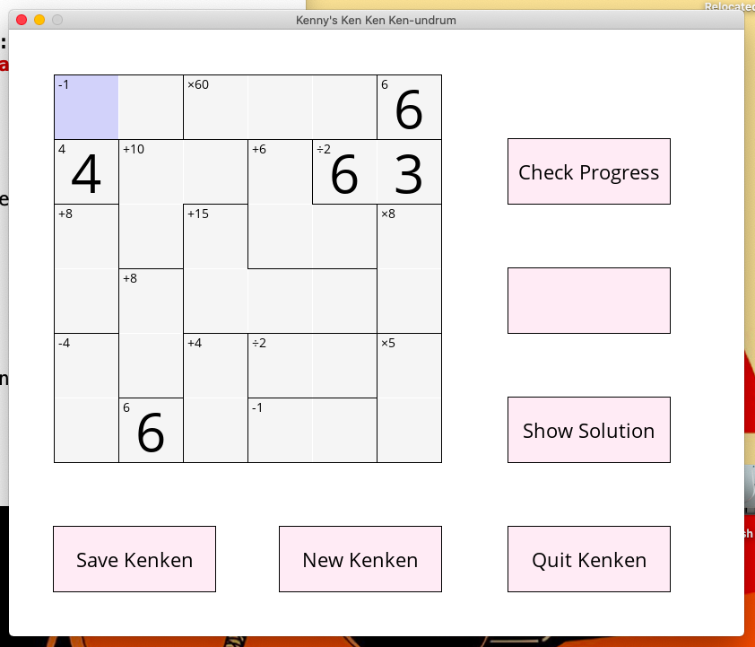
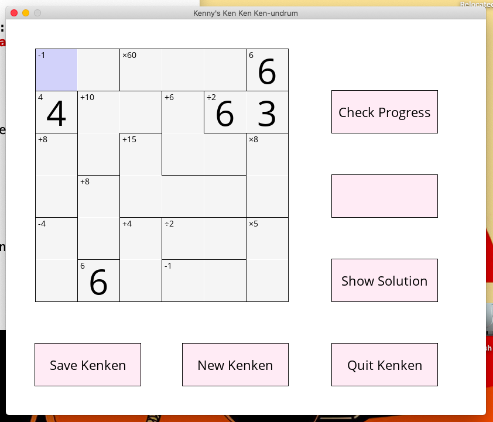

Mathdoku
This project started as an excuse to implement linked lists, but grew from there into a full fledged Mathdoku (a.k.a. Kenken) generator, solver and game. Throughout this project, I had to develop my C skills extensively, in particular building my knowledge of memory allocation, C data types and recursive algorithms. This project also required me to develop skills in organising and planning software as I went.
I then created a program "GUI-Kenken" which required me to learn SDL2, a common graphics library with windowing and rendering capabilities.
I have now completed this project, having added loading and saving features and a start menu. One day I may do a more major rewrite to allow for variably sized puzzles to be created and stored, but that is not something that I plan to implement in the near future.
To view on Github, visit https://github.com/w-flowers/Kenken


 
